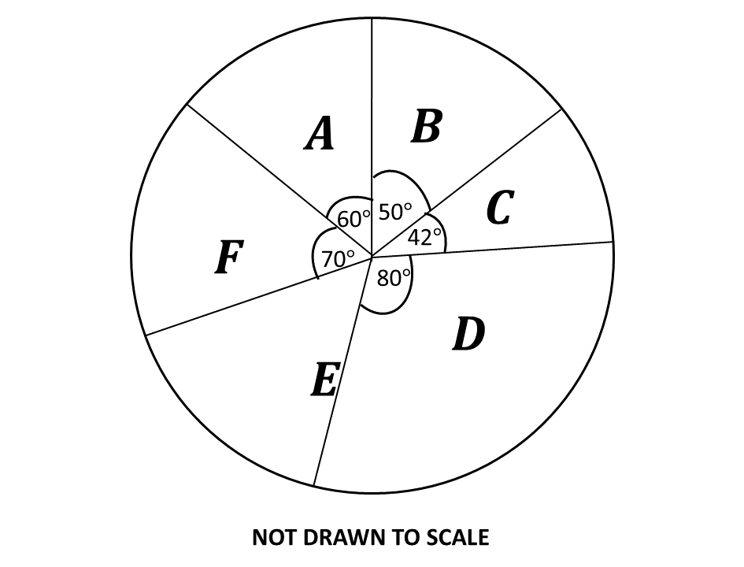

BECE
Year to Practice:
1990
1991
1992
1993
1994
1995
1996
1997
1998
1999
2000
2001
2002A
2002B
2003
2004
2005
2006
2007
2008
2009
2010
2011
2012
2013
2014
2015
2016
2017
2018
2019
2020
2021
2022
2023
2024
PAST QUESTIONS 2016
Time yourself to improve on your speed. You are to use not more than 60 minutes for this section.
Click on the link below when you are ready.
Kindly contact the administrator of the site on WhatsApp or Phone (0208711375) for the link to the test.
Try the questions first, using not more than 15 minutes for each question, and watch the accompanying videos to see how the questions are solved.
Question 1
\(a)\) In an examination, 50 candidates sat for either Mathematics or English Language. 60% passed in Mathematics and 48% passed in English Language. If each candidate passed in at least one of the subjects, how many candidates passed in:
\(\hspace{0.5cm} i)\) Mathematics?
\(\hspace{0.5cm} ii)\) English Language?
\(b)\) Illustrate the information given in \((a)\) on a Venn diagram.
\(c)\) Using the Venn diagram, find the number of candidates who passed in
\(\hspace{0.5cm} i)\) both subjects;
\(\hspace{0.5cm} ii)\) Mathematics only.
Question 2
\(a)\) The cost \(P\), in Ghana cedis, of producing \(n\) items is given by the formula,
\(\hspace{0.5cm}\)\(P = \frac{3}{4}n + 1800\)
Find the
\(\hspace{0.5cm} i)\) cost of producing 2,000 items;
\(\hspace{0.5cm} ii)\) number of items that will be produced with Gh₵2,400.00;
\(\hspace{0.5cm} iii)\) cost when no items are produced.
\(b)\) A passenger travelling by air is allowed a maximum of 20 kg luggage. A man has four bags weighing 3.5 kg, 15 kg, 2 kg and 1.5 kg.
\(\hspace{0.5cm} i)\) Find the excess weight of his luggage.
\(\hspace{0.5cm} ii)\) Express the excess weight as a percentage of the maximum weight allowed.
Question 3
\(a)\) A doctor treated 2,000 patients over a period of time. If he worked 5 hours a day and spent 15 minutes on each patient, how many days did the doctor spend to treat all the patients?
\(b)\) The pie chart shows the distribution of textbooks to six classes \(\mathbf{A}\), \(\mathbf{B}\), \(\mathbf{C}\), \(\mathbf{D}\), \(\mathbf{E}\) and \(\mathbf{F}\) in a school.
\(\hspace{0.5cm} i)\) If class \(\mathbf{D}\) was given 720 textbooks, how many textbooks were distributed to each of the remaining classes?
\(\hspace{0.5cm} ii)\) What is the average number of textbooks distributed to the classes?
\(\hspace{0.5cm} iii)\) How many classes had less than the average number of textbooks?
Question 4
\(a)\) Using a scale of 2 cm to 1 unit on both axes, draw on a graph sheet two perpendicular axes \(Ox\) and \(Oy\) for \(-5 \leq x \leq 5\) and \(-5 \leq y \leq 5\).
\(\hspace{0.5cm} i)\) Plot, indicating the coordinates of all points \(P(1, 1)\), \(Q(1, 2)\), \(R(2, 2)\) and \(S(2, 1)\) on the graph sheet. Join the points to form square \(PQRS\)
\(\hspace{0.5cm} ii)\) Draw and indicate clearly all coordinates, the image \(P_1Q_1R_1S_1\) of square \(PQRS\) under an enlargement from the origin with a scale factor of 2, where \(P \rightarrow P_1\), \(Q \rightarrow Q_1\), \(R \rightarrow R_1\) and \(S \rightarrow S_1\).
\(\hspace{0.5cm} iii)\) Draw and indicate clearly all coordinates, the image \(P_2Q_2R_2S_2\) of square \(P_1Q_1R_1S_1\) under a reflection in the \(x\)-axis where \(P_1 \rightarrow P_2\), \(Q_1 \rightarrow Q_2\), \(R_1 \rightarrow R_2\) and \(S_1 \rightarrow S_2\).
\(b)\) Using the graph in \(4(a)\), find the gradient of the line \(R_2S\)
Question 5
\(a)\) Given that \(\mathbf{u} = 4\), \(\mathbf{t} = 5\), \(\mathbf{a} = 10\) and \(\mathbf{s} = \mathbf{u}\mathbf{t} + \frac{1}{2}\mathbf{a}\mathbf{t}^2\), find the value of \(\mathbf{s}\).
\(b)\) The selling price of a gas cooker is Gh₵450.00. If the a customer is allowed a discount of \(20\%\), calculate the:
\(\hspace{0.5cm} i)\) discount
\(\hspace{0.5cm} ii)\) amount paid by the customer.
\(c)\) A crate of minerals containing ten bottles of Coca Cola and fourteen bottles of Fanta was given to some children for a birthday party. If a child chose a drink at random from the crate, find the probability that it was Fanta.
Question 6
\(a)\) Using a ruler a pair of compasses only, construct:
\(\hspace{0.5cm} i)\) triangle \(XYZ\) with \(|XY| = 9\) cm, \(|YZ| = 12\) cm and \(|XZ| = 8\) cm;
\(\hspace{0.5cm} ii)\) the perpendicular bisector of line \(XY\).
\(\hspace{0.5cm} iii)\) the perpendicular bisector of line \(XZ\).
\(b)\) \(i)\) Label the point of intersection of the two bisectors as \(T\);
\(\hspace{0.5cm} ii)\) With the point \(T\) as center, draw a circle of radius \(6\) cm.
\(c)\) Measure:
\(\hspace{0.5cm} i)\) \(|TX|\)
\(\hspace{0.5cm} ii)\) angle \(XYZ\).
To advertise on our website kindly call on 0208711375 or 0249969740.